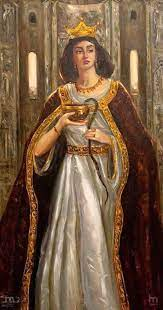

Կենսագրություն
Զաբելի ծնվելու թվականի հետ կապված կան մի քանի տարբերակներ՝ 1212 թվականան[փա՞ստ], 1213 թվական[փա՞ստ], 1215 թվական[3][4][5], 1216 թվականի[4][6] հունվարի 25, 1216 թվականի հունվարի 27[2] և 1217 թվականի հունվարի 25[2] ։ Ծնվել է Սիս քաղաքում[5]։
Կիլիկիայի գահաժառանգ
1219 թվականին[2] Զաբելը հոր կամքով նշանակվել է Կիլիկիայի գահաժառանգ՝ խնամակալ ունենալով Ատանին, ապա նրա սպանվելուց հետո՝ Կոստանդին Լամբրոնացի իշխանին[5]։ 1222 թվականից Կիլիկիայի հայոց թագուհի[5]։

Ընտանիքը
Զապելը ունեցել է հինգ դուստր և երեք որդի, որոնցից կրտսերը՝ Լևոն Գ, 1270 թվականին ժառանգել է գահը։ Ֆիմի (?-1309) Մարիամ (?- 1310) Սիբիլ (1240-1290) Ռիթա (?) Լևոն Գ (հունվարի 24, 1236 կամ հունվարի 23, 1237-փետրվարի 6, 1289) Թորոս (1244-օգոստոսի 24, 1266) Զաբել (?-1268) Զաբելը թաղվել է Դրազարկում[5]։ Պահպանվել են Զաբելի և Հեթում Ա-ի պատկերներով դրամներ[5]։

Կիլիկիայի հայկական թագավորություն
Կիլիկյան Հայաստանի և արևմտյան Եվրոպայի երկրների միջև հաստատվեցին ռազմական և տնտեսական կապեր, ինչի շնորհիվ Կիլիկիա ներմուծվեցին ասպետությունը, հագուստների նոր ոճեր, ֆրանսերեն բառեր և տիտղոսներ։ Իսկ հասարակարգը վերածվեց ավատատիրականի։ Խաչակիրներն իրենք շատ բաներ վերցրեցին հայերից, ինչպես օրինակ աշտարակների կառուցումը և եկեղեցաշինության որոշ տարրեր։ Կիլիկյան Հայաստանն ուներ հզոր տնտեսություն, որի վառ ապացույցն է այն ժամանակվա մեծագույն նավահանգիստներից մեկը՝ Այասը, որտեղով անցել է նաև հայտնի ճանապարհորդ Մարկո Պոլոն։